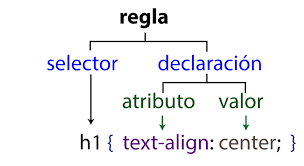

1.1 ¿Que significa CSS?
CSS en ingles significa Cascading Stylesheets, en español significa "las hojas de estilo en cascada"
1.2- ¿Para qué sirve el CSS? ¿Qué programa se utiliza para interpretar el CSS?
CSS sirve para darle estilo y posicionarlo visualmente, para cambiar la fuente, el color, el tamaño y el
espaciado del contenido
1.3 ¿A qué se llama regla de CSS?
Se llama regla de CSS a una declaración o conjunto de ella en CSS que se utiliza para aplicar estilos y formatos
a elementos HTML en una página web.
1.4 ¿Cuál es la anatomía de la regla de CSS? Agregar imagen explicativa y utilizando una lista descriptiva
explicar sus elementos
La anatomia de las reglas de CSS esta compuesta por:
Selector
Se selecciona el elemento de html al que se le quiere dar formato
Declaración
Contiene la propiedad que se le quiere aplicar al selector y el valor de la propiedad
Propiedades
Se elige que propiedad se le quiere aplicar al selector, en este caso es "color"
Valor de la propiedad
Se elije una de las muchas posibles apariencias para la propiedad

1.5 ¿Qué es un selector en CSS?
Un selector en CSS es un elemento html que elegimos para darle un estilo o formato
1.6 Identificar y definir los selectores: de ID, de clases, universal, de etiquetas, descendente
Selector de ID
Se utiliza para seleccionar un elemento HTML que tiene un atributo "id" específico. Se denota con un signo
numeral.
Selector de clases
Se utiliza para seleccionar elementos HTML que tienen una clase específica. Se denota con un punto seguido del
nombre de la clase
Selector universal
Selecciona todos los elementos HTML en una página. Se utiliza cuando se desea aplicar un estilo a todos los
elementos
Selector de etiquetas
Se utiliza para seleccionar todos los elementos HTML de un tipo específico.
Selector descendente
Los selectores descendentes se utilizan para seleccionar elementos que están anidados dentro de otros elementos
1.7 Explicar brevemente utilizando una lista ordenada: ¿cómo funciona el CSS?
CSS funciona gracias a los siguientes procesos:
- 1- El navegador carga el CSS
- 2- El navegador el HTML en un DOM(Modelo de objetos del documento)
- 3- El navegador va a buscar la mayor parte de los recursos al HTML como imagenes, videos y el mismo CSS
vinculado.
- 4- El navegador analiza el CSS y ordena en diferentes "cubos" segun los selectores.
- 5- El arbol de renderizacion presenta la estructura en que los nodos deben aparecer después de aplicarle las
reglas.
- 6- En el ultimo proceso se muestra en la pantalla el aspecto visual de la pagina.
1.8¿Cuáles son las tres formas para vincular CSS con HTML?
Hay tres formas de vincular CSS con HTML, con @import, con style y poniendo la regla del enlace en head
1.9- Ingrese al sitio CSS Zen Garden http://www.csszengarden.com y analicemos el código HTML siguiendo los
siguientes pasos:
Hacer clic en View All Designs
Elegir dos diseños y abrirlo en pestañas distintas
En el primer diseño presiona ctrl+u (esta combinación de teclas permite ver el código HTML en el navegador)
En el segundo diseño presiona ctrl+u (esta combinación de teclas permite ver el código HTML en el navegador)
Escribir la URL de los dos diseños seleccionados y responder: las etiquetas dentro de body ¿son iguales? ¿Qué es
lo distinto? ¿Qué contribuye al cambio de diseño?
Abrir los dos archivos CSS de los diseños seleccionados. ¿Son los mismos?
En líneas generales, el mismo HTML ¿puede tener diferentes diseños?
http://www.csszengarden.com/202/ primer diseño
http://www.csszengarden.com/204/ segundo diseño
No, no son iguales.
Lo distinto es la parte grafica de los diseños.
Cambia el link de los CSS.
No, no son los mismos.
No, si el diseño cambia el html lo hace con el
2.0- Utilizaremos las siguientes propiedades de CSS. Completar la columna de valores posibles para cada
propiedad.
color:El valor de color puede variar con los colores RGB
background-color:El valor de color puede variar con los colores RGB
font-size: xx-small, x-small, small, medium, large, x-large, xx-large
font-weight:normal, bold, lighter, bolder, 100, 200, 300, 400, 500, 600, 700, 800, 900
font-style:normal, italic, oblique
font-family:nombre de familia o generico
text-align:start, end, left, right, center, justify, match_parent
text-decoration:puede usar los valores de cada una de las propiedades de la forma larga:
text-decoration-line, text-decoration-color,
y text-decoration-style
text-transform:capitalize, uppercase, lowercase, none, full-width
letter-spacing: length:un largo a utilizar para el espaciado horizontal y vertical,length length: el primero
da el
espaciado horizontal (espacio entre celdas de una fila) y el segundo el espaciado vertical (espacio entre
celdas de una columna).
line-height:normal, numero, longitud, porcentaje